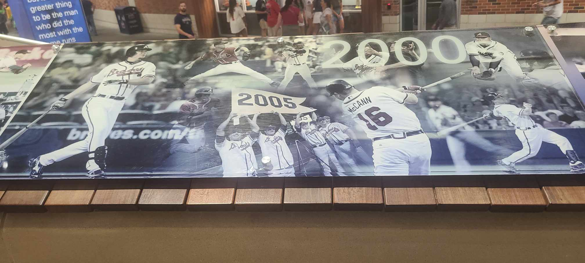
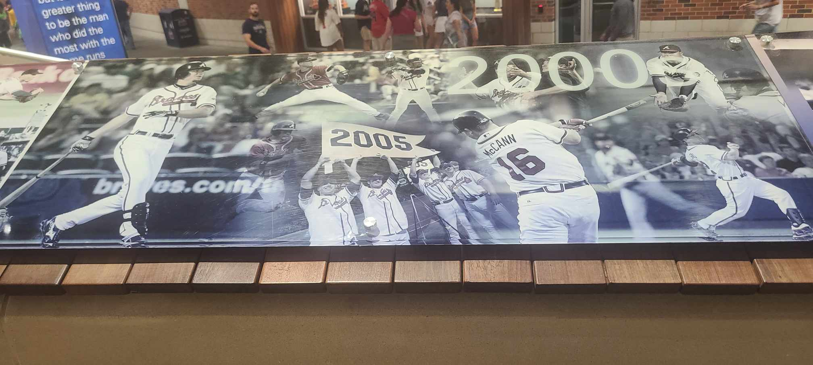

Braves History
The Atlanta Braves, an iconic baseball franchise, have a storied history that mirrors the evolution of America’s pastime. Founded in 1871 as the Boston Red Stockings, they are one of the two remaining charter members of the National League1. The team underwent several name changes, becoming the Beaneaters, Doves, Rustlers, and Bees, before settling on the Braves
In 1953, seeking new horizons, the franchise moved to Milwaukee, where they won a World Series in 19573. This victory was a testament to their resilience and ability to adapt to change. The Braves’ journey continued as they relocated to Atlanta in 1966, a move that would further cement their legacy3
The Atlanta Braves have since become a symbol of the South, capturing additional World Series titles in 1995 and 20213. Their history is punctuated by legendary players and moments that have left an indelible mark on the sport. From Hank Aaron’s record-breaking home runs to the dominant pitching of the 1990s, the Braves have consistently showcased excellence.
Pictures Thru the Decades
 


Pictures of Past Jerseys


Their impact extends beyond the diamond, influencing the cultural and social fabric of their communities. The Braves’ story is not just about baseball; it’s about perseverance, community, and the relentless pursuit of greatness. As they continue to write new chapters, the Braves remain a testament to the enduring spirit of baseball.
Home
I will do my best to post my picks daily. It may be NBA, NFL, or MLB. Maybe even a combination of the three. I am just trying to find what I think has the most value and has a high percentage of hitting. You don't have to tail me. Just giving out what I think has the best chance to make me profitable at the end of the day. As a sports bettor, that is all I can ask for. May the sport gods forever be in our favor!
 Home
Home
Braves History
More and More states are legalizing sports betting. Which is opening the door for Sport Handicappers to start making podcast videos or joining websites to get their bets out. ESPN and other networks have created TV shows surrounding betting on sports. There are Billions of Dollars to be made in the world of sports. Sports gambling is growing more popular by the day.
 Braves History
Braves History
Braves Awards
Full transparency here! If I am wrong, then I am wrong. I won't try to hide it. I try to look at the long run. Am I profitable this week? or this month? As a sport gambler you have to have a short memory. If someone screwed you last time ask yourself, "What is the odds of him not hitting two games in a row?" Using this philosophy and researching statisics I try to come up with what I think has the best percentage to hit.
 Braves Awards
Braves Awards
Gameplay
Full transparency here! If I am wrong, then I am wrong. I won't try to hide it. I try to look at the long run. Am I profitable this week? or this month? As a sport gambler you have to have a short memory. If someone screwed you last time ask yourself, "What is the odds of him not hitting two games in a row?" Using this philosophy and researching statisics I try to come up with what I think has the best percentage to hit.
Gameplay
Braves Win
Full transparency here! If I am wrong, then I am wrong. I won't try to hide it. I try to look at the long run. Am I profitable this week? or this month? As a sport gambler you have to have a short memory. If someone screwed you last time ask yourself, "What is the odds of him not hitting two games in a row?" Using this philosophy and researching statisics I try to come up with what I think has the best percentage to hit.
Braves Win